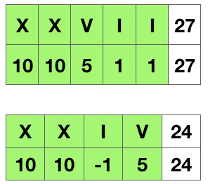

Roman numerals are represented by seven different symbols: I, V, X, L, C, D and M.
Symbol Value I 1 V 5 X 10 L 50 C 100 D 500 M 1000
For example, two is written as II in Roman numeral, just two one’s added together. Twelve is written as, XII, which is simply X + II. The number twenty seven is written as XXVII, which is XX + V + II.
Roman numerals are usually written largest to smallest from left to right. However, the numeral for four is not IIII. Instead, the number four is written as IV. Because the one is before the five we subtract it making four. The same principle applies to the number nine, which is written as IX. There are six instances where subtraction is used:
-
Ican be placed beforeV(5) andX(10) to make 4 and 9. -
Xcan be placed beforeL(50) andC(100) to make 40 and 90. -
Ccan be placed beforeD(500) andM(1000) to make 400 and 900.
Given a roman numeral, convert it to an integer. Input is guaranteed to be within the range from 1 to 3999.
Example 1:
Input: "III" Output: 3
Example 2:
Input: "IV" Output: 4
Example 3:
Input: "IX" Output: 9
Example 4:
Input: "LVIII" Output: 58 Explanation: L = 50, V= 5, III = 3.
Example 5:
Input: "MCMXCIV" Output: 1994 Explanation: M = 1000, CM = 900, XC = 90 and IV = 4.
解题分析
查看罗马数字，如果左边的数字比右边大，则就是需要做减法，否则做加法。

1
2
3
4
5
6
7
8
9
10
11
12
13
14
15
16
17
18
19
20
21
22
23
24
25
26
27
28
29
30
31
32
33
34
35
36
37
38
39
40
41
42
43
44
45
46
47
48
49
50
51
52
53
54
55
56
57
58
59
60
61
62
63
64
65
66
67
68
69
70
71
72
73
74
75
76
77
78
79
80
81
82
83
84
85
86
87
88
89
90
91
92
93
94
95
96
97
98
99
100
101
102
103
104
105
106
107
108
109
110
111
112
113
114
115
116
117
118
119
120
121
122
123
124
125
126
127
128
129
130
131
132
133
134
135
136
137
138
139
140
141
142
143
144
145
146
147
148
149
150
151
152
153
154
155
156
157
158
159
160
161
162
163
164
165
166
167
168
169
170
171
172
173
174
175
176
177
178
179
180
181
package com.diguage.algorithm.leetcode;
import java.util.HashMap;
import java.util.Objects;
/**
* = 13. Roman to Integer
*
* https://leetcode.com/problems/roman-to-integer/[Roman to Integer - LeetCode]
*
* Roman numerals are represented by seven different symbols: `I`, `V`, `X`, `L`, `C`, `D` and `M`.
*
* [source]
* ----
* Symbol Value
* I 1
* V 5
* X 10
* L 50
* C 100
* D 500
* M 1000
* ----
*
* For example, two is written as `II` in Roman numeral, just two one's added together.
* Twelve is written as, `XII`, which is simply `X` + `II`. The number twenty seven is
* written as XXVII, which is `XX` + `V` + `II`.
*
* Roman numerals are usually written largest to smallest from left to right. However,
* the numeral for four is not `IIII`. Instead, the number four is written as `IV`.
* Because the one is before the five we subtract it making four. The same principle
* applies to the number nine, which is written as `IX`. There are six instances
* where subtraction is used:
*
* * `I` can be placed before `V` (5) and `X` (10) to make 4 and 9.
* * `X` can be placed before `L` (50) and `C` (100) to make 40 and 90.
* * `C` can be placed before `D` (500) and `M` (1000) to make 400 and 900.
*
* Given a roman numeral, convert it to an integer. Input is guaranteed to be within the range from 1 to 3999.
*
* .Example 1:
* [source]
* ----
* Input: "III"
* Output: 3
* ----
*
* .Example 2:
* [source]
* ----
* Input: "IV"
* Output: 4
* ----
*
* .Example 3:
* [source]
* ----
* Input: "IX"
* Output: 9
* ----
*
* .Example 4:
* [source]
* ----
* Input: "LVIII"
* Output: 58
* Explanation: L = 50, V= 5, III = 3.
* ----
*
* .Example 5:
* [source]
* ----
* Input: "MCMXCIV"
* Output: 1994
* Explanation: M = 1000, CM = 900, XC = 90 and IV = 4.
* ----
*
* @author D瓜哥, https://www.diguage.com/
* @since 2019-07-11 17:14
*/
public class _0013_RomanToInteger {
// 从右向左，从小到大，更容易理解
public int romanToInt(String s) {
int result = 0;
int pre = 0;
for (int i = s.length() - 1; i >= 0; i--) {
int curr = charToNum(s.charAt(i));
if (curr >= pre) {
result += curr;
} else {
result -= curr;
}
pre = curr;
}
return result;
}
private int charToNum(char c) {
switch (c) {
case 'I': return 1;
case 'V': return 5;
case 'X': return 10;
case 'L': return 50;
case 'C': return 100;
case 'D': return 500;
case 'M': return 1000;
default: return 0;
}
}
// 从左向右处理
public int romanToIntLeftToRight(String s) {
int result = 0;
int prenum = charToNum(s.charAt(0));
for (int i = 1; i < s.length(); i++) {
int num = charToNum(s.charAt(i));
if (prenum < num) {
result -= prenum;
} else {
result += prenum;
}
prenum = num;
}
result += prenum;
return result;
}
public int romanToInt2(String s) {
int result = 0;
if (Objects.isNull(s) || s.length() == 0) {
return result;
}
HashMap<String, Integer> r2i = new HashMap<>();
r2i.put("I", 1);
r2i.put("V", 5);
r2i.put("X", 10);
r2i.put("L", 50);
r2i.put("C", 100);
r2i.put("D", 500);
r2i.put("M", 1000);
r2i.put("IV", 4);
r2i.put("IX", 9);
r2i.put("XL", 40);
r2i.put("XC", 90);
r2i.put("CD", 400);
r2i.put("CM", 900);
for (int i = s.length(); i > 0; ) {
int step = 2;
int beginIndex = i - step;
if (beginIndex < 0) {
beginIndex = 0;
}
String symbol = s.substring(beginIndex, i);
Integer value = r2i.get(symbol);
if (Objects.isNull(value)) {
step = 1;
beginIndex = i - step;
if (beginIndex < 0) {
beginIndex = 0;
}
symbol = s.substring(beginIndex, i);
value = r2i.get(symbol);
}
result += value;
i -= step;
}
return result;
}
public static void main(String[] args) {
_0013_RomanToInteger roman = new _0013_RomanToInteger();
System.out.println(roman.romanToInt("III") == 3);
System.out.println(roman.romanToInt("IV") == 4);
System.out.println(roman.romanToInt("IX") == 9);
System.out.println(roman.romanToInt("LVIII") == 58);
System.out.println(roman.romanToInt("MCMXCIV") == 1994);
}
}